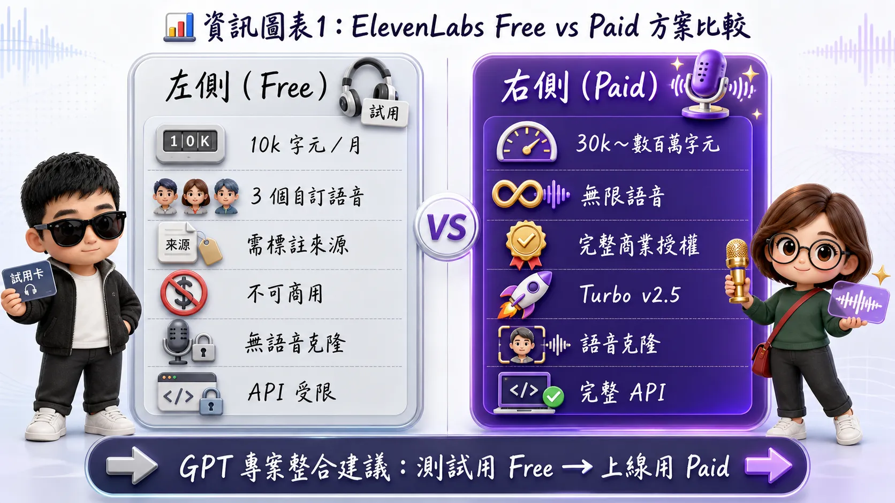
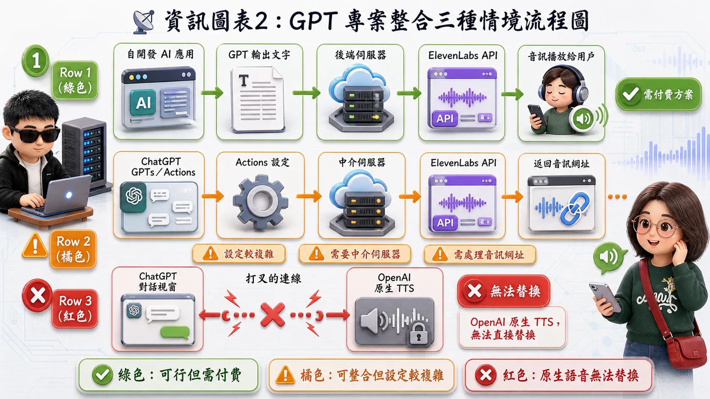
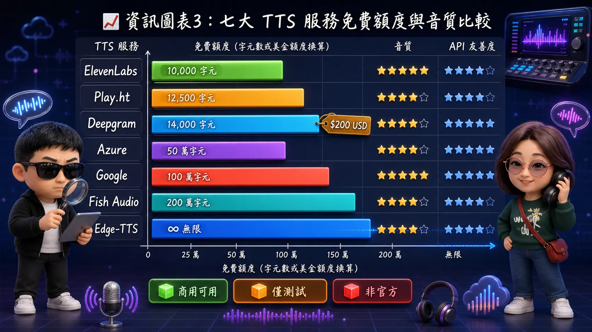
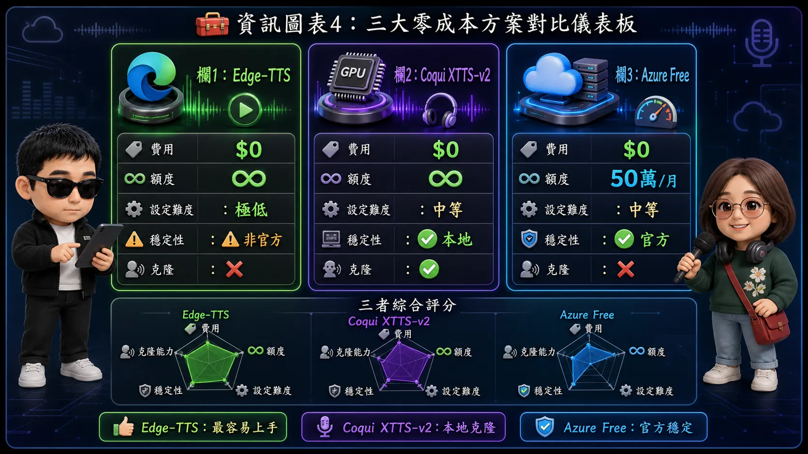
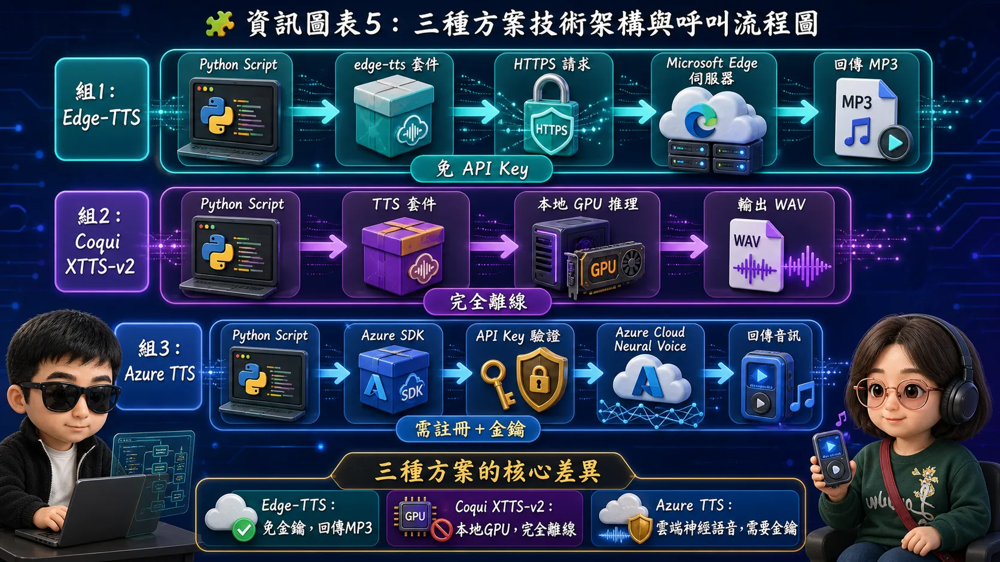
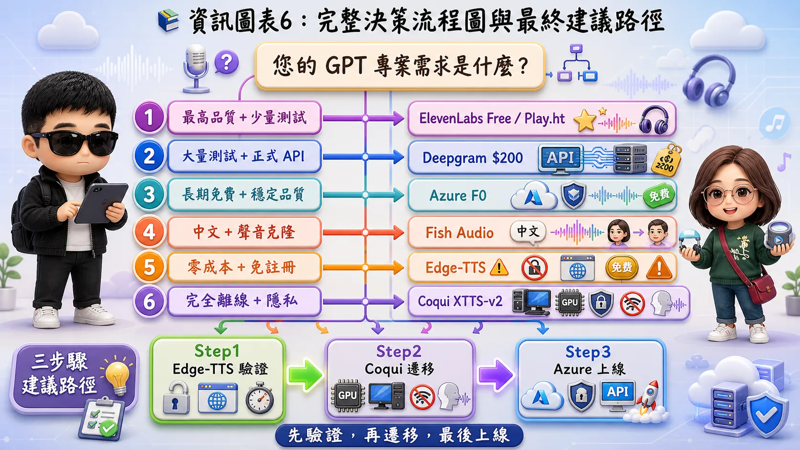

ElevenLabs 免費方案解析 × GPT 專案整合 × 零成本語音合成替代方案
可以，但有限制。ElevenLabs 提供「Free Forever」方案，適合個人測試或輕量級使用。
每月約 10,000 個字元（Characters），超出即停止生成。
可使用最多 3 個自訂語音（Custom Voices）。
生成的音訊必須標註來源（Attribution Required），且不可用於商業用途。
無法使用 Turbo v2.5 模型、語音克隆進階功能，API 存取權限較低。

這取決於您所指的「GPT 專案」具體形式，以下分三種情況說明：
完全可以。這是 ElevenLabs 最核心的使用場景。
間接可行，但有門檻。
不行。
ChatGPT 原生語音功能使用 OpenAI 自家 TTS 模型，無法替換為 ElevenLabs 引擎。

| 項目 | Free 方案 | 付費方案 (Starter+) |
|---|---|---|
| 月字元額度 | ~10,000 | 30,000 ~ 數百萬 |
| 商業授權 | ❌ 需標註來源 | ✅ 完整商業授權 |
| API 存取 | 有限制 | ✅ 完整支援 |
| 語音克隆 | ❌ | ✅ 即時/專業克隆 |
| 整合 GPT 應用 | 僅限測試 | ✅ 生產環境推薦 |
適合透過 Codex / API 呼叫使用，以下為市場上最適合開發者免費試用的服務。
| 服務名稱 | 免費額度 | 音質 | API 友善度 | 特色與限制 |
|---|---|---|---|---|
| ElevenLabs | 10k 字元/月 | ⭐⭐⭐⭐⭐ | ⭐⭐⭐⭐⭐ | 業界標竿，需標註來源，不可商用 |
| Play.ht | 12.5k 字元/月 | ⭐⭐⭐⭐⭐ | ⭐⭐⭐⭐ | 音色豐富，僅限非商用+標註 |
| Deepgram | $200 USD 額度 | ⭐⭐⭐⭐ | ⭐⭐⭐⭐⭐ | 開發者首選，支援 STT+TTS |
| Azure TTS | 50萬字元/月 | ⭐⭐⭐⭐ | ⭐⭐⭐⭐⭐ | 免費額度最大方，Neural Voice |
| Google Cloud TTS | 400萬字元/月 | ⭐⭐⭐⭐ | ⭐⭐⭐⭐⭐ | WaveNet 額度極高，需綁信用卡 |
| Fish Audio | 每日免費額度 | ⭐⭐⭐⭐⭐ | ⭐⭐⭐⭐ | 中文效果極佳，API 文檔清晰 |
| Edge-TTS | 完全免費無限 | ⭐⭐⭐⭐ | ⭐⭐⭐ | 非官方，零成本但無 SLA |

pip install edge-tts真正免費、可程式化呼叫、無嚴格字數限制的 TTS 解決方案。
利用 Microsoft Edge 瀏覽器線上朗讀接口。完全免費、無需 API Key、300+ 種語音、中文效果極佳。Python 套件 edge-tts 即可使用。
開源免費（Apache 2.0），無限使用。支援多語言 + 聲音克隆（6 秒參考音訊）。建議 NVIDIA GPU 6GB+ VRAM。資料不出本機，隱私性極佳。
F0 Free Tier 永久免費，Neural Voice 品質穩定。需註冊 Azure 帳號 + 綁信用卡驗證（不會扣款）。Free Tier 不可商用，僅限測試/學習。

| 維度 | Edge-TTS | Coqui XTTS-v2 | Azure Free |
|---|---|---|---|
| 免費程度 | ⭐⭐⭐⭐⭐ 無限 | ⭐⭐⭐⭐⭐ 無限 | ⭐⭐⭐ 月限50萬字 |
| 設定難度 | 極低 | 中等（需GPU） | 中等（需帳號） |
| 音質 | ⭐⭐⭐⭐ | ⭐⭐⭐⭐ | ⭐⭐⭐⭐ |
| 穩定性 | ⚠️ 非官方 | ✅ 本地自主 | ✅ 官方 SLA |
| 聲音克隆 | ❌ | ✅ 支援 | ❌ |
| 適合場景 | 快速原型/Demo | 隱私/大量生成 | 正規測試/初期上線 |
可直接複製使用的 Python 程式碼，也可作為 Codex / Copilot 的 Prompt 參考。

根據您的 GPT 專案需求，快速找到最適合的免費 TTS 方案。

使用 Codex/Copilot 生成程式碼時，確保 API Key 不會被硬編碼。請使用環境變數（.env）管理密鑰。
幾乎所有免費 TTS API 都禁止商業使用且要求標註歸屬。若專案將對外發布或營利，請務必升級付費方案。
上述所有服務皆基於 HTTP API，理論上相容任何能發送網路請求的環境。請確認您的系統支援標準 REST API 呼叫。
5 分鐘內就能跑起來，驗證您的 GPT 專案流程是否可行。
遷移到本地部署，徹底擺脫外部依賴。
用量在 50 萬字/月以內，這是最安全的免費選項。